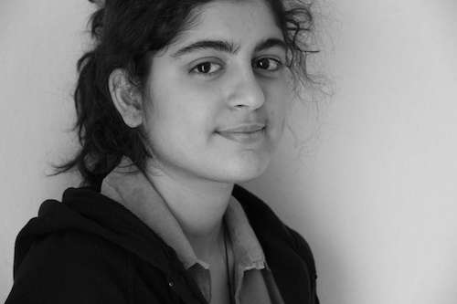

Please describe any relevant past experience
I was the study monitor of Engineering School in Huazhong Univ. of Sci. & Tech (HUST). And I was the head of Secretory Department of Photographer Association in HUST. These experience strengthens my ability to communicate and collaborate. Moreover, in academic field, I was the team leader of a research team consisted of 4 team members for two years after sophomore.
What are your goals/vision for your committees of choice? How do you think you can contribute to them?
My vision in EGSC is to support SEAS students in achieving their academic excellence or career goals with passion and capability. Helping others to grasp opportunities and solving their problems will be my contribution to SEAS. Additionally, working with brilliant EGSC members will definitely improve my communication and cooperation skills and help me to pursue my career goal.
Please describe any relevant past experience
Worked as Chairperson of IETE-SF (Institution of Electronics and Telecommunication Engineering Student Forum), a leading professional society in India, in my third year of undergraduate studies at D J Sanghvi College of Engineering, Mumbai. Being the head of the committee, I managed all the other departments and we organized successful Industrial visits and technical workshops.
Also, as the Publicity Head for the technical festival of my undergraduate school, my job was to market and publicize the various social events taking place
What are your goals/vision for your committees of choice? How do you think you can contribute to them?
I have prior experience in organizing events and I like doing that. I would like to apply this experience to the Social committee of EGSC
Please describe any relevant past experience
2011-2014
Reliance Industries Ltd., Mumbai
Having successfully liaised external organisations as a part of my vendor management role in Reliance, I believe I have the requisite experience to bring to the table.
2007-2011 (Manipal University)
1. Head (workshops category)
> Organized technical and non-technical workshops for undergrad students from over 80 colleges
> Conducted workshops for honing soft-skills, interview skills and presentation skills
2. Head for Systems and Database of Akshay Urja Club, the renewable energy club Manipal University
3. Co-convenor (Synergia)
Organized a regional level renewable energy techfest named Synergia 2010.
4. Event head for LED lighting workshop.
What are your goals/vision for your committees of choice? How do you think you can contribute to them?
Friends in New York working for established organisations and would like to leverage those relationships to further enhance Columbia's recruiting affairs.
Since I have the requisite experience in conducting workshops that have helped student to hone their interviewing skills, I believe that I have successfully managed a career development role back in my undergrad days.
Please describe any relevant past experience
graduated from Tel Aviv Uni. in 2010 and worked since in several world leading companies including - Intel, Freescale semiconductors, PMC-Sierra and AUDIOCODES.
Most of my R&D experience is in the VLSI and communiation areas.
In adition to that I worked as a TA at Tel Aviv Uni.
I also love music - I co-founded a recording studio and played in a local rock band before moving ot NYC.
What are your goals/vision for your committees of choice? How do you think you can contribute to them?
As I am older in compare to most students (just celebrated 31) and having a family and experience as a working person, I give much thought to my expences. that does not mean cheap by any means but responsible! I think that whan given the opporunity and responsability of a big budget we must make the best out of it and use it wisely!
I also may assist in career development and from my knowladge of how it is to work in companies - from start up to huge international companies. waht is it they look for and the differance between them.
Any other information you would like to share
like most israelies - I also dida 3 year serive in the Israeli Army, in part of my possitions I was responsible on over 50 new recruitees. I also serve in reserve duty as a sergent.
Please describe any relevant past experience
I have been in student union for two years in college. The main part of my job is organizing some matches and activities to promote exchanges between different grades and departments. Besides, I worked in department's office, helping dealing with affairs of students who have financial difficulties.
What are your goals/vision for your committees of choice? How do you think you can contribute to them?
In my opinion, the work in Career Department or Alumni Affairs is to build a bridge between students and companies/alumnus. We should let companies/alumnus know students' needs and helping students benefit more from companies/alumnus we invited. These rely on good communications and broad surveys. I believe I can contribute to achieve this goal.
Please describe any relevant past experience
I've been the anchor for the campus radio for two years. My program mainly focused on global political topics. I also did many interviews with students and faculty about their views of campus life or breaking news, and once with the Canadian Counsul Ms. Andrea Clark-Grignon during her visit to the university.
Also, I was the chief editor for a campus magazine for two years, which is all about students' and faculty's recommendation of books, music and movies. That position gave me a good chance to communicate with many professors and alumni, and also improved my coordiantion ability.
What are your goals/vision for your committees of choice? How do you think you can contribute to them?
Through several sessions and panels that were held by EGSC, I realized the importance of networking and alumni resources. So I want to be part of this active group that can help the SEAS students get more involved into the networking process so as to make one step closer to finding an appropriate job after graduation.
Once I get to know the committee better, I'll definitely have many new ideas to make some progressive changes. For one thing, I'm not sure if anyone from EGSC is working on this, but I realize a lot of us are international students, which enlightens me of the importance of international alumni. I know that probably many of our successful alumni are working overseas, and if we can build some kind of connection between them and our students, it'll be easier for us to seek a job overseas.
Please describe any relevant past experience
1) Served as the Vice President and Public Relations officer of International Student Organization(ISO) at Worcester Polytechnic Institute (WPI) at Worcester, MA during my undergrad from 2007 - 2011. ISO had over 500 active members.
Responsibilities included:
-Overseeing the budget allocation of ISO and presenting it to to the Student government.
- Coordinating with other social groups on campus to organize
events together.
- Organized events ranging from ski and mall trips to Dj nights, themed dinner and 3 day orientation for international students.
2) Served as a Senator for a year in Undergraduate Student Government.
Responsibilities included:
- Budget Allocation for Class 3( Social and Ethnic) organizations in WPI.
- Advertising events organized by the Student Government. This included designing posters, banners and working with the PR team to spread the word on campus.
3) Served as Secretary and VP of Amnesty International WPI chapter
Responsibilities included:
- Organizing monthly seminars and movie screenings to raise awareness about human right abuses throughout the word.
- Working with various other groups to bring influential speakers on campus.
- Conducting bake sales and other events for fund raising.
4) Head delegate of the WPI Model United Nations team for 2 years.
Responsibilities included:
- Choosing the team that was going to attend various MUN conferences across the country.
-Making travel and living accommodations for the members of the team.
What are your goals/vision for your committees of choice? How do you think you can contribute to them?
If I am given the opportunity to become the department representative and work with one of the committees, I would make sure that the work I do has a positive impact on the academic and social life of columbia students. This I believe can be achieved by integrating EGSC sponsored activities more thoroughly into the orientation schedule. I would try to include ice breakers and other team building events in the orientation to make sure new incoming students feel more comfortable from day 1. The other most critical aspect I would work on is to facilitate collaboration between Columbia Business School and SEAS to help foster a culture of innovation, That would be beneficial for both schools.
Please describe any relevant past experience
I have served as the following posts:
1. Cultural Head of ISTE (Indian Society of Technical Education) chapter of Nirma University for 2012-2013.
As a part of the job, I contributed in successfully designing, planning, organizing and implementing various cultural events such as dance, singing, fine arts and sports competitions and workshops for graffiti and Photoshop as a part of I-Fest (a national level techno-cultural symposium) with around 700 participants.
2. Spokesperson of ECO (Electronics and Communication Organization) for the term of 2012-2013 at Nirma University (India).
I contributed in organizing NU-Tech (a national level technical festival) with more than 1000 participants.
What are your goals/vision for your committees of choice? How do you think you can contribute to them?
1. Interschool:
To promote more collaboration among not only the Engineering and Science departments but also the other departments of Columbia University as a whole by organizing (A) Inter-Department Guest lectures (B) Networking events (C) Informal social events for students of various departments to interact.
Even though I am an Electrical Engineering graduate student, I myself am taking a class in Psychology department and one in Visual Arts department. Since I understand the inter connection of all the fields I believe I can serve more passionately to this committee.
2. Career Development:
To act as a bridge between CCE and students. I plan to promote Career development by conducting workshops related to developing soft skills and helping in organizing mock interviews.
3. Academic Affairs:
To go through the problems current students are facing related to academic policies and bring required modifications so as to make the system school as well as student friendly.
Please describe any relevant past experience
I was branch representative at NIT Calicut where I helped students to get courses and kept their demands to professors, demands like to allow students who are waitlisted. I was there in most of times, even when students found that a few courses are difficult, then we started group studies, which helped a lot of students to score more.
What are your goals/vision for your committees of choice? How do you think you can contribute to them?
I have helped students in past to get the jobs in the field they want. Usually students are not aware of the resources that are available to get into industry. So I think Career Development committee, I can help a lot.
I called atleast 6 companies in my undergrad college for on-campus placements. Most of companies come with the help of Alumni's, so I think I would be a good match for Alumni Affairs.
Academic Affairs: In my undergrads I was branch representative for 3 years. I know that there are always new problems and situations come that we never faced or thought of. Even in very difficult cases I have helped my colleagues to come over with their problems.
Any other information you would like to share
Apart from all positions that I have applied, I think I would be able to help a lot to set-up an entire new department which could help students to get apartments/housing quickly and easily with much less broker fee.
Please describe any relevant past experience
I was a member and active participant of some of the clubs in my Undergrad. I helped organize events including college cultural fest where I worked with the registration and event committees. During the time I worked as a network engineer I was part of Corporate Social Responsibility and Employee Recreation Committee.
What are your goals/vision for your committees of choice? How do you think you can contribute to them?
I want to work with the current committee members and understand how each of them work. Understand their vision and goals. I think it is very important to work as a team and help the student community grow. In the beginning, I would like to volunteer and help with the events. Since I have helped organize events in the past I would be a valuable member.

Valeh Valiollahpour Amiri
Please describe any relevant past experience
I have been Webmaster and PR manager of the Entrepreneurship club at T̩l̩com ParisTech (my university in Paris). I have also been member of the team that organized the biggest student-run career fair at my university (200+ companies and 5000+ visitors). I am interested in all student-run activities, events, and communities.
What are your goals/vision for your committees of choice? How do you think you can contribute to them?
I am pretty eager to participate in the digital media affairs and have had several experiences in this field (web development, promotion of a club or community on social networks, etc.). I believe it is extremely important to have a well-organized website and if I am chosen for this post, I am committed to make EGSC fully present on the Web and all social media (since they're part of our every second life and our first way of getting to know about things and events).
Please describe any relevant past experience
I have been a class leader since I was in primary school and all the way to college. In college, I was not only the monitor of my class, I am also the head of study and science department of our school student council in Shanghai Jiao Tong University. I have done a lot of work in my "career" before. For example, as a head of my department in student council of my college, I organized an Intelligence competition with over 950 people attended, an original little creation competition and a debate competition for all new student for our school. I hope these experience will be helpful if I am lucky enough to work in student council.
What are your goals/vision for your committees of choice? How do you think you can contribute to them?
I'd like to know how people work together in America, since I have done years of cooperation in China. I want to improve my communication ability with friends from all over the world with different kinds of background. And try to be adapt to the new life here.
In order to do so, I would love to work with people in student council. Try my best to communicate with them, work in team. In one word, work can bring me what I want.
Any other information you would like to share
I don't think I will pour my time very much in student council so that it will ruin my study plan. However, I am sure I will be responsible for every work that I promise to do.